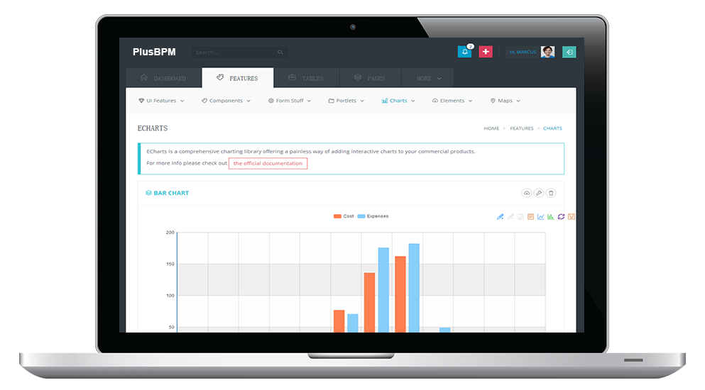
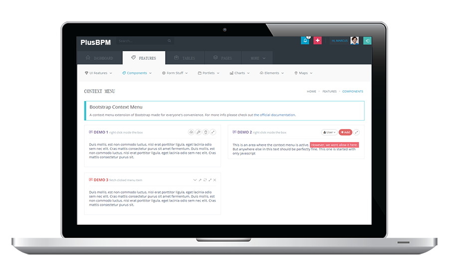
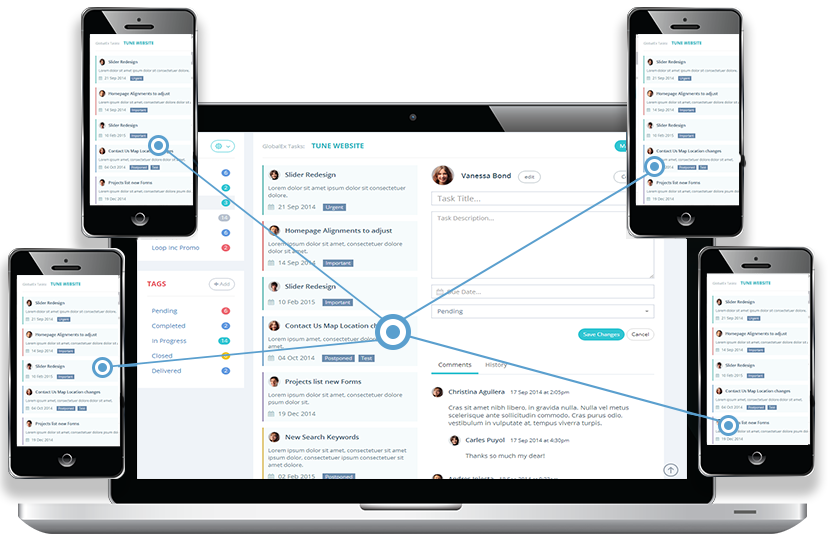
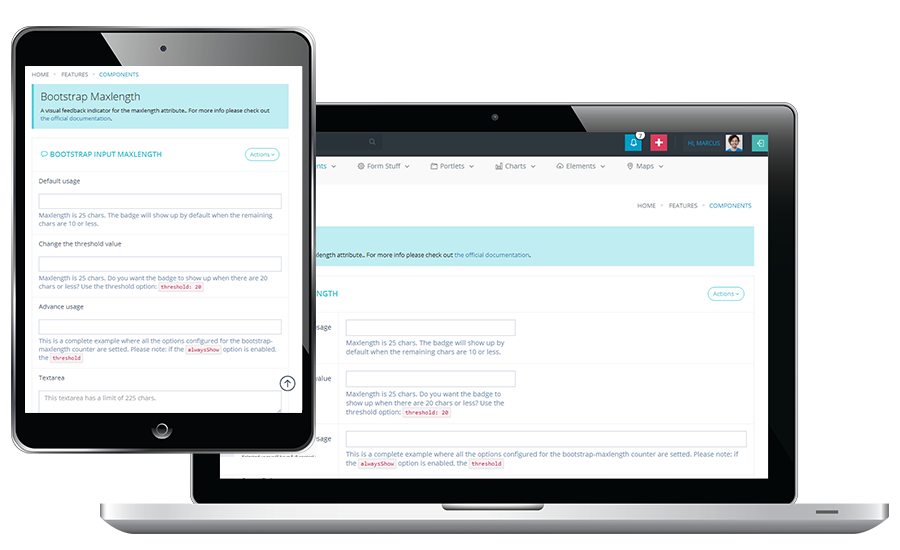

案例管理
动态的运作方式
人员、流程、数据和内容之间的交互可以是动态的、临时的、不可预测的。统一这些互动以获得更好、更快、更明智的决策。
通过PlusBPM数字化转型平台支持所有类型的案例工作-包括调查、事件管理、服务请求，和流程决策。

调查
让你使用很少的结构化流程却有了更明确的业务目标
BPM记录
将所有的案例信息(包括数据、流程和协作)集中在一个可执行的实例中。
高级内容管理
简化信息捕获，并对信息进行控制和使用。
实时分析和报告
始终掌握关键绩效指标
案例仪表盘
简化性能监控并持续改进。

事件管理
当你拥有高级流程的同时，具备更强的灵活性和协作能力。
社交协作
发现所有信息和背景，以推动更有效的行动。
社交任务
允许用户更快的进行案例操作分配临时任务。
透名度
提高对流程和信息的认识，加快案例解决的速度。
记录标签
为案例协作添加上下文来获得更清晰的图片。
文档分享
快速和安全地共享相应的案例文件。

服务请求
当你在流程节点中，并且不知道前后的节点环境。
直观的用户界面
更加容易让你获得相关信息。
即时访问
随时访问任何设备上的所需信息，并提高性能。
智能警报
让利益相关者永远保持知情态度。
企业移动性
平衡在办公室和工作场所完成更多工作的能力。
任务管理
由最合适的人员完整正确的工作。

流程审批
当有一个确定的流程路径时，你需要灵活处理意想不到的情况。
图形化设计
可视化的方式来帮助你快速进行改变。
报告和分析
提供可见性报告来实现更加正确的改变。
动态业务规则
无论您使用何种方式都能处理您的复杂问题。
可拓展的平台
随着您的业务发展而改进
快速集成
轻松实现连接信息